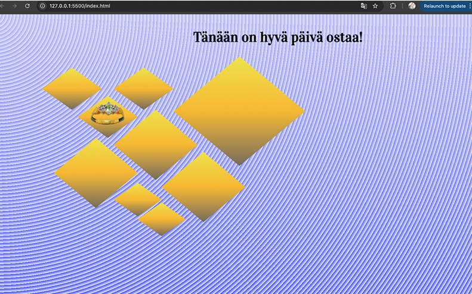
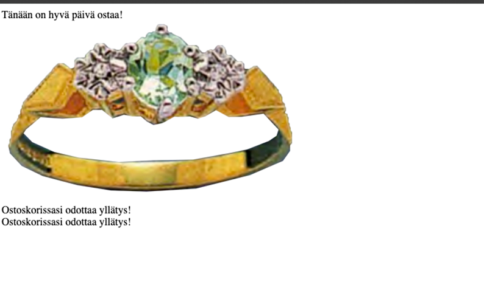

Hover tarkoittaa siis sitä, kun hiiri liikkuu halutun elementin päälle, joka muuttuu sitten halutusti. Hoveria käytetään usein linekissä, esim muuttuu vihreeksi ja poistaa alleviivauksen. Nopea kokeilu: selkeä hover-ohje! Kuitenkin huomattavaa tässä on, että se toimii vain desktopilla, mutta puhelimessa toiminnallisuus ei tule esille. Mobiilioptimointi, tarkoittaanettä tietyn koon jälkeen sisältö järjestäytyy sarakkeisiin (MEDIA QUERIES). Esimerkki kaavasta -> @media (max-width: 1250 px) {.flex {Direction: column;}}. Inspectorissa on toiminnallisuus jossa on ikään kuin iphonen ja tabletin kuva. Tässä voi testailla miltä näyttää mobiilissa ja koneella kun kääntelee
Puhuimme erikoismerkkien, kuten samll capseista. Tämä onnistuu spanin (class) avulla. Huomioitavaa on, että käytetyssä fontissa pitää tällöin olla haettu erikoismuotoilu, muuten kone piirtää sen omalla tavallaan. Itse fontin tuominen nettisivulle onnistuu @font-face avulla, joka näyttää kaikille halutun kirjainmuotoilun. Siis pelkästään font familyn kirjoittaminen koodiin ei suoraan näytä fonttia eri koneella katsojalle, jos hänellä ei ole kyseistä koneellaan. Google fonts on hyvä tapa etsiä ja ladata fonttjea.
Yksi tapa on 1) get font 2) get emed code, jota ei kuitenkaan Googlen politiikan takia suositella. Ladataan fontti mielummin koneelle ja kytketään se tätä kautta nettisivulle. Koneelta ttf muotoinen fontti pitää muuttaa woff2 muotoon. Tämä onnistuu esimerkiksi transfonter generaattorin avulla. Hyvänä huomiona fonteista ja muotoilusta oli myös se, että H-otsikot on boldattu automaattisesti. Jos ei tätä halua, pitää vapauttaa boldauksesta erikseen. Sitä kokeiltiin tällä sivulla H1:een. Ohje löytyy Tämä onnistuu esimerkiksi täältä.
Faviconit ovat nettisivun verkkosivun osoitteen vieressä selaimessa näkyviä kuvakkeita. Niitä voi tehdä itse tietokoneella 16x16 px kuvina. Tallennus tapahtuu gif tai png muotoon. Yksi vaihtoehto on esimerkiksi käyttää realfavicongeneratoria. Kävimme lisäksi läpi varjojen luomista (Box Shaddow ja Text Shaddow), jota kokeilin tämän kappaleen otsikolle.
Ja oli sitä tosi puheissa Heikin kanssa kurssin alussa, että aloitettava olisi some-lakko. Onnistui hävettävän huonosti, joka hieman tässä vaiheessa kaduttaa. Ajatuksena olisi ollut pohtia mitä tapahtuu jos aikaa ei käytä tutuilla somealustoilla. Samaan hengen vetoon Heikki jutteli arkistoista ja erilaisista nettisivuista, joihin kannattaa tutustua. Luimme tällä viikolla artikkelin, jossa puhuttiin entin indivisualismin katoamisesta ja tätä kautta korostettiin oman äänen nostamista omien nettisivujen avulla. Artikkeli oli todella hyvä ja inspiroi paljon uuteen viikkoon. Haluaisinkin vielä kurssin viimeisillä viikoilla sekkailla enemmän netissä. Ehdin tehdä sitä jonkin verran tällä viikolla ja tässä muutama tärkeä sivu matkaltani:
Puhuimme erikoismerkkien, kuten samll capseista. Tämä onnistuu spanin (class) avulla. Tarkemman visuaaliset askeleet löytyvät toisesta opintopäiväkirjasta. Kerkesin kunnolla aloittaa tehtävän vasta tällä viikolla, eli hävettävän myöhässä. Olen kuitenkin ylpeä mitä viikon aikana on kerennyt tapahtumaan. Ainoana ongelmana on se, että en saa lopputulosta näkymään vielä netissä oikein. Vaatii hieman säätöä. Tuntuu kuitenkin siltä, että isoja harppauksia syntyi myös koodausrintamalla ja aloin saamaan kiinni html- ja css-maailmasta! Tarkemmat kuvat ja projektin tallenus löytyy Adoben sivuilta. Minulle on henkilökohtaisesti tärkeää saada muistot talteen hyvin visuaalisessa muodossa.
Olen kokonaisuudessaan hyvin iloinen siitä, miten sain otettua itseäni niskasta kiinni vaikeimpaan vaiheeseen, eli koodaamiseen, ryhtymisessä. On ollut vaikeaa saada aivoja pois muista velvollisuuksista ja 100% keskittyneeksi tähän. Syynä voi olla kokemus viime syksyltä (Pythonin perusteet), joka vei valtaosan vapaa-ajastani. Muistan kuinka upputunut tehtäviin olin. Se hieman hirvitti. Olen kuitenkin tällä viikolla reflektoinut paljon lukeamiamme tekstejä. Erityisesti kurssin ensimmäinen artikkeli kuvasi hyvin sitä, miten nettisivuprojekteja ei tarvitse ottaa liian vakavasti (ammattimaisesti). Voi kokeilla ja fiilistellä. Olen kurssin aikana huomannut olevani koulun suhteen hyvin mustavalkoinen. Tästä syystä kurssi on ollut myös erinomainen paikka harjoitella, sitä miten olla vaatimatta itseltään 200 prosenttia. Lisäksi Heikin sanoin, kahden kielen yhdistelmä on melko anteeksiantava virheiden näkökulmasta. Olen oppinut nauttimaan kielten joustavuudesta ja huomannut että niiden opettelu on melko helppoa!
Mustavalkoisuus tarkoittaa omalla kohdallani siis sitä, että annan joko kaikkeni tai melkein luovutan. Pelkäsin kurssin luisuvan luovuttamisen tielle, mutta ilokseni huomasin että kurssin materiaali on ajanut minua kohti terveellisempää ajattelua. Näin ollen nettisivutehtävä tuntuu astetta kevyemmältä. Uskon myös, että paneiden poistumisella saatan yllättää itseni positiivisesti. Toisaalta en pety jos siitä ei tule täydellinen. Koen, että tämän kurssin taitoja haluaa jatkaa jalostaen myös tulevaisuudessa. Alla vielä kuvat nettisivun tämän hetkisestä tilanteesta. Ensimmäinen kuva on minulle näkyvä lopputulos ja toinen on julkaistu. Ilmeisesti siis css ja htlm eivät julkaistussa kohtaa. Otan tästä selvää ensi viikolla ja jatkan sivun muokkaamista.
 